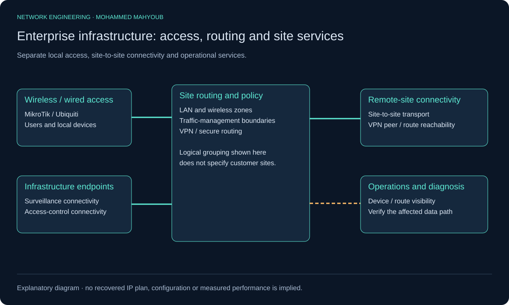
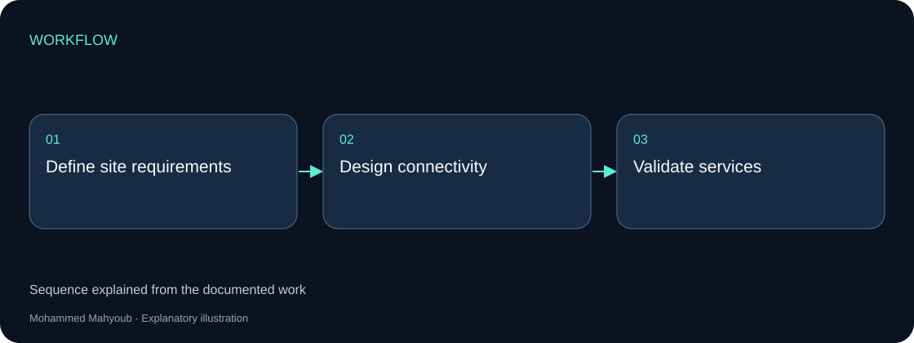

Network Engineering · Enterprise Infrastructure
Enterprise Wireless & Network Infrastructure Architecture
Designed multi-zone wireless and LAN infrastructure using MikroTik and Ubiquiti, including secure routing, VPN connectivity, traffic management and surveillance/access-control integration.
Implemented Project
System architecture

Implementation scope
The architecture connects local users and infrastructure services through wireless and wired access. Routing and VPN connectivity provide the site-to-site boundary.
Engineering approach
The project architecture image belongs to enterprise infrastructure. Coverage planning and MPLS backbone work are presented separately so their respective tools and deliverables remain clear.

Source context
Original project posters and interface screenshots are identified separately from explanatory source diagrams. The gallery documents this project only. Open any figure to inspect it at full available resolution.
Verification context
The functional diagram explains this implementation’s engineering responsibilities. The original source preview appears above. As-built addressing, configuration exports and raw acceptance records are not included in the public release.
Detailed verification boundaries and technical source context